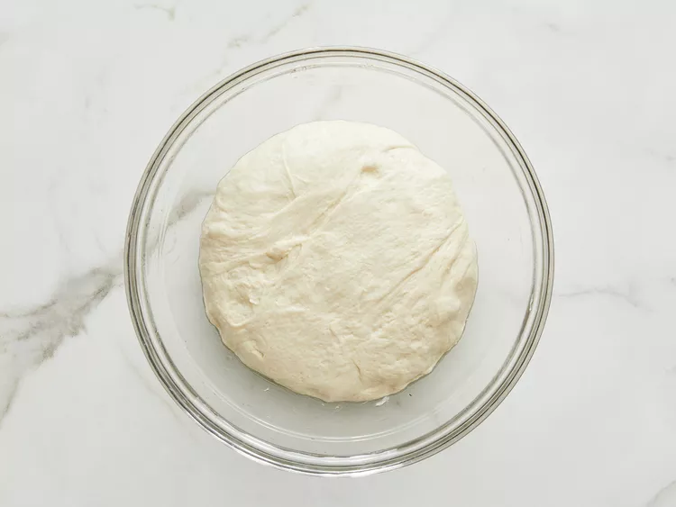
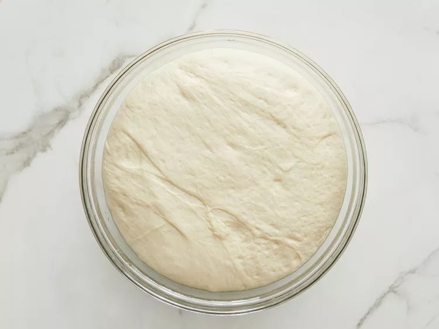
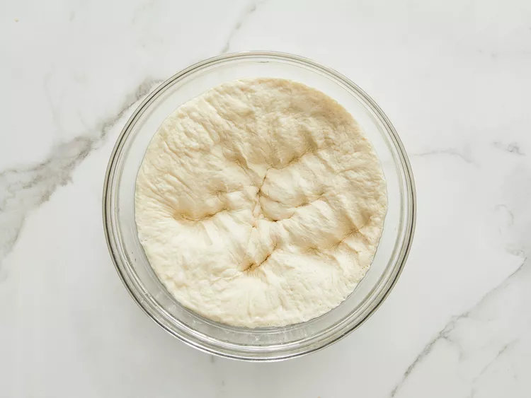
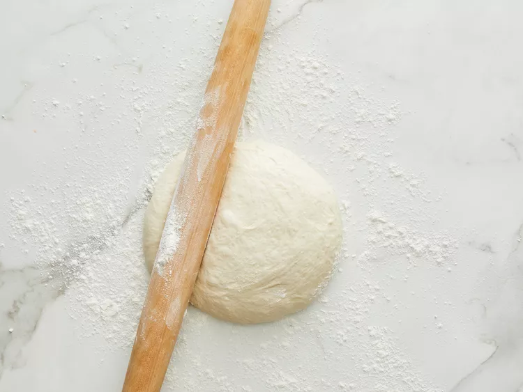

This thick crust pizza dough recipe yields a crust that is soft and
doughy on the inside and slightly crusty on the outside. Cover it with
your favorite sauce and toppings to make a delicious pizza.
Ingredients
1 ½ cups warm water (110 degrees F/45 degrees C)
2 ¼ teaspoons active dry yeast
½ teaspoon brown sugar
2 tablespoons olive oil
1 teaspoon salt
3 ⅓ cups all-purpose flour, divided
Steps
Stir together warm water, yeast, and brown sugar in a large mixing
bowl; let sit for 10 minutes.
Stir oil and salt into yeast mixture. Mix in 2 1/2 cups flour until
incorporated. Turn dough out onto a clean, floured surface. Knead
dough, adding remaining flour, a little at a time, until dough is no
longer sticky. Place dough into an oiled bowl.

Cover with a towel and let rise until doubled in size, about 1 hour.

Punch down dough and form it into a tight ball. Allow dough to relax
for 1 minute before rolling out.


Preheat the oven to 425 degrees F (220 degrees C).
If baking dough on a pizza stone, place toppings on dough and bake
immediately. If baking dough on a pan, lightly oil the pan and let
dough rise for 15 to 20 minutes before topping and baking it.
Bake in the preheated oven until cheese is melted and crust is golden
brown, 15 to 20 minutes.